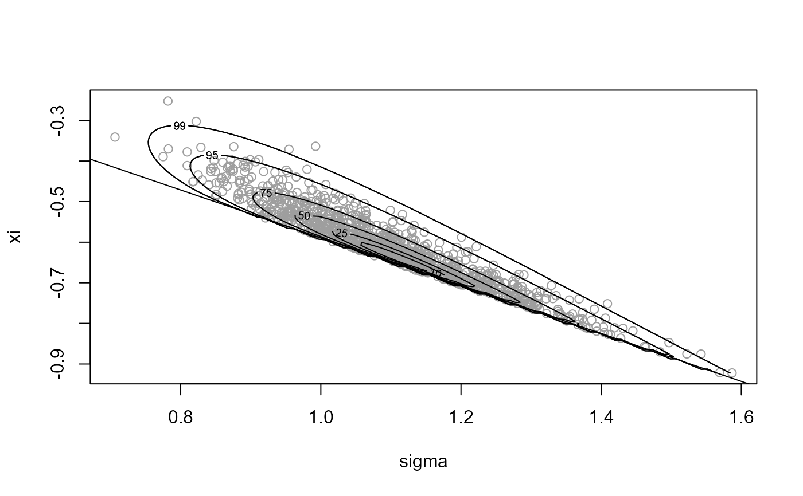
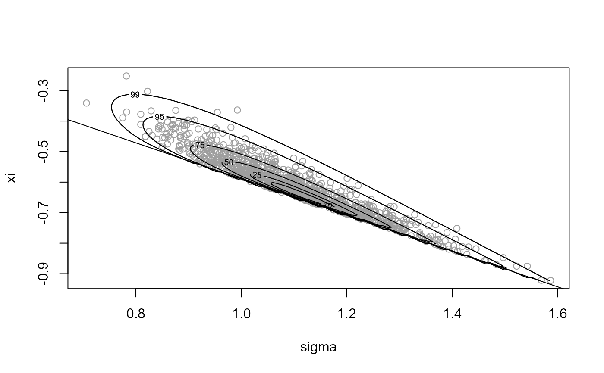

Uses the generalized ratio-of-uniforms method to simulate from a
distribution with log-density \(\log f\) (up to an additive
constant). The density \(f\) must be bounded, perhaps after a
transformation of variable.
The file user_fns.cpp that is sourced before running the examples
below is available at the rust Github page at
https://raw.githubusercontent.com/paulnorthrop/rust/master/src/user_fns.cpp.
Usage
ru_rcpp(
logf,
...,
n = 1,
d = 1,
init = NULL,
mode = NULL,
trans = c("none", "BC", "user"),
phi_to_theta = NULL,
log_j = NULL,
user_args = list(),
lambda = rep(1L, d),
lambda_tol = 1e-06,
gm = NULL,
rotate = ifelse(d == 1, FALSE, TRUE),
lower = rep(-Inf, d),
upper = rep(Inf, d),
r = 1/2,
ep = 0L,
a_algor = if (d == 1) "nlminb" else "optim",
b_algor = c("nlminb", "optim"),
a_method = c("Nelder-Mead", "BFGS", "CG", "L-BFGS-B", "SANN", "Brent"),
b_method = c("Nelder-Mead", "BFGS", "CG", "L-BFGS-B", "SANN", "Brent"),
a_control = list(),
b_control = list(),
var_names = NULL,
shoof = 0.2
)Arguments
- logf
An external pointer to a compiled C++ function returning the log of the target density \(f\) evaluated at its first argument. This function should return
-Infwhen the density is zero. It is better to uselogf =explicitly, for example,ru(logf = dnorm, log = TRUE, init = 0.1), to avoid argument matching problems. In contrast,ru(dnorm, log = TRUE, init = 0.1)will throw an error because partial matching results inlogfbeing matched tolog = TRUE.See the Passing user-supplied C++ functions in the Rcpp Gallery and the Providing a C++ function to
ru_rcppsection in the Rusting faster: Simulation using Rcpp vignette.- ...
Further arguments to be passed to
logfand related functions.- n
A non-negative integer scalar. The number of simulated values required. If
n = 0then no simulation is performed but the componentboxin the returned object gives the ratio-of-uniforms bounding box that would have been used.- d
A positive integer scalar. The dimension of \(f\).
- init
A numeric vector of length
d. Initial estimate of the mode oflogf. Iftrans = "BC"ortrans = "user"this is after Box-Cox transformation or user-defined transformation, but before any rotation of axes. Ifinitis not supplied thenrep(1, d)is used. Iflength(init) = 1andd > 1theninit <- rep(init, length.out = d)is used.- mode
A numeric vector of length
d. The mode oflogf. Iftrans = "BC"ortrans = "user"this is after Box-Cox transformation or user-defined transformation, but before any rotation of axes. Only supplymodeif the mode is known: it will not be checked. Ifmodeis supplied theninitis ignored.- trans
A character scalar.
trans = "none"for no transformation,trans = "BC"for Box-Cox transformation,trans = "user"for a user-defined transformation. Iftrans = "user"then the transformation should be specified usingphi_to_thetaandlog_janduser_argsmay be used to pass arguments tophi_to_thetaandlog_j. See Details and the Examples.- phi_to_theta
An external pointer to a compiled C++ function returning (the inverse) of the transformation from
theta(\(\theta\)) tophi(\(\phi\)) that may be used to ensure positivity of \(\phi\) prior to Box-Cox transformation. The argument isphiand the returned value istheta. Ifphi_to_thetais undefined at the input value then the function should returnNA. See Details. Iflambda$phi_to_theta(see argumentlambdabelow) is supplied then this is used instead of any function supplied viaphi_to_theta.- log_j
An external pointer to a compiled C++ function returning the log of the Jacobian of the transformation from
theta(\(\theta\)) tophi(\(\phi\)), i.e., based on derivatives of \(\phi\) with respect to \(\theta\). Takesthetaas its argument. Iflambda$log_j(see argumentlambdabelow) is supplied then this is used instead of any function supplied vialog_j.- user_args
A list of numeric components. If
trans = ``user''thenuser_argsis a list providing arguments to the user-supplied functionsphi_to_thetaandlog_j.- lambda
Either
A numeric vector. Box-Cox transformation parameters, or
A list with components
- lambda
A numeric vector. Box-Cox parameters (required).
- gm
A numeric vector. Box-Cox scaling parameters (optional). If supplied this overrides any
gmsupplied by the individualgmargument described below.- init_psi
A numeric vector. Initial estimate of mode after Box-Cox transformation (optional).
- sd_psi
A numeric vector. Estimates of the marginal standard deviations of the Box-Cox transformed variables (optional).
- phi_to_theta
as above (optional).
- log_j
As above (optional).
- user_args
As above (optional).
This list may be created using
find_lambda_one_d_rcpp(ford= 1) orfind_lambda_rcpp(for anyd).
- lambda_tol
A numeric scalar. Any values in lambda that are less than
lambda_tolin magnitude are set to zero.- gm
A numeric vector. Box-Cox scaling parameters (optional). If
lambda$gmis supplied in input listlambdathenlambda$gmis used, notgm.- rotate
A logical scalar. If TRUE (
d> 1 only) use Choleski rotation. If d = 1 androtate = TRUEthen rotate will be set to FALSE with a warning. See Details.- lower, upper
Numeric vectors. Lower/upper bounds on the arguments of the function after any transformation from theta to phi implied by the inverse of
phi_to_theta. Ifrotate = FALSEthese are used in all of the optimisations used to construct the bounding box. Ifrotate = TRUEthen they are use only in the first optimisation to maximise the target density.` Iftrans = "BC"components oflowerthat are negative are set to zero without warning and the bounds implied after the Box-Cox transformation are calculated insideru.- r
A numeric scalar. Parameter of generalized ratio-of-uniforms.
- ep
A numeric scalar. Controls initial estimates for optimisations to find the \(b\)-bounding box parameters. The default (
ep= 0) corresponds to starting at the mode oflogfsmall positive values ofepmove the constrained variable slightly away from the mode in the correct direction. Ifepis negative its absolute value is used, with no warning given.- a_algor, b_algor
Character scalars. Either
"nlminb"or"optim".Respective optimisation algorithms used to find \(a(r)\) and (\(b\)i-(r), \(b\)i+(r)).- a_method, b_method
Character scalars. Respective methods used by
optimto find \(a(r)\) and (\(b\)i-(r), \(b\)i+(r)). Only used ifoptimis the chosen algorithm. Ifd= 1 thena_methodandb_methodare set to"Brent"without warning.- a_control, b_control
Lists of control arguments to
optimornlminbto find \(a(r)\) and (\(b\)i-(r), \(b\)i+(r)) respectively.- var_names
A character (or numeric) vector of length
d. Names to give to the column(s) of the simulated values.- shoof
A numeric scalar in [0, 1]. Sometimes a spurious non-zero convergence indicator is returned from
optimornlminb). In this event we try to check that a minimum has indeed been found using different algorithm.shoofcontrols the starting value provided to this algorithm. Ifshoof = 0then we start from the current solution. Ifshoof = 1then we start from the initial estimate provided to the previous minimisation. Otherwise,shoofinterpolates between these two extremes, with a value close to zero giving a starting value that is close to the current solution. The exception to this is when the initial and current solutions are equal. Then we start from the current solution multiplied by1 - shoof.
Value
An object of class "ru" is a list containing the following
components:
- sim_vals
An
nbydmatrix of simulated values.- box
A (2 *
d+ 1) byd+ 2 matrix of ratio-of-uniforms bounding box information, with row names indicating the box parameter. The columns contain- column 1
values of box parameters.
- columns 2 to (2+
d-1) values of variables at which these box parameters are obtained.
- column 2+
d convergence indicators.
Scaling of f within
ruand relocation of the mode to the origin means that the first row ofboxwill always bec(1, rep(0, d)).- pa
A numeric scalar. An estimate of the probability of acceptance.
- r
The value of
r.- d
The value of
d.- logf
A function.
logfsupplied by the user, but with f scaled by the maximum of the target density used in the ratio-of-uniforms method (i.e.logf_rho), to avoid numerical problems in contouring f inplot.ruwhend = 2.- logf_rho
A function. The target function actually used in the ratio-of-uniforms algorithm.
- sim_vals_rho
An
nbydmatrix of values simulated from the function used in the ratio-of-uniforms algorithm.- logf_args
A list of further arguments to
logf.- logf_rho_args
A list of further arguments to
logf_rho. Note: this component is returned byru_rcppbut not byru.- f_mode
The estimated mode of the target density f, after any Box-Cox transformation and/or user supplied transformation, but before mode relocation.
Details
For information about the generalised ratio-of-uniforms method and transformations see the Introducing rust vignette. See also Rusting faster: Simulation using Rcpp.
These vignettes can also be accessed using
vignette("rust-a-vignette", package = "rust") and
vignette("rust-c-using-rcpp-vignette", package = "rust").
If trans = "none" and rotate = FALSE then ru
implements the (multivariate) generalized ratio of uniforms method
described in Wakefield, Gelfand and Smith (1991) using a target
density whose mode is relocated to the origin (`mode relocation') in the
hope of increasing efficiency.
If trans = "BC" then marginal Box-Cox transformations of each of
the d variables is performed, with parameters supplied in
lambda. The function phi_to_theta may be used, if
necessary, to ensure positivity of the variables prior to Box-Cox
transformation.
If trans = "user" then the function phi_to_theta enables
the user to specify their own transformation.
In all cases the mode of the target function is relocated to the origin after any user-supplied transformation and/or Box-Cox transformation.
If d is greater than one and rotate = TRUE then a rotation
of the variable axes is performed after mode relocation. The
rotation is based on the Choleski decomposition (see chol) of the
estimated Hessian (computed using optimHess
of the negated
log-density after any user-supplied transformation or Box-Cox
transformation. If any of the eigenvalues of the estimated Hessian are
non-positive (which may indicate that the estimated mode of logf
is close to a variable boundary) then rotate is set to FALSE
with a warning. A warning is also given if this happens when
d = 1.
The default value of the tuning parameter r is 1/2, which is
likely to be close to optimal in many cases, particularly if
trans = "BC".
References
Wakefield, J. C., Gelfand, A. E. and Smith, A. F. M. (1991) Efficient generation of random variates via the ratio-of-uniforms method. Statistics and Computing (1991), 1, 129-133. doi:10.1007/BF01889987 .
Eddelbuettel, D. and Francois, R. (2011). Rcpp: Seamless R and C++ Integration. Journal of Statistical Software, 40(8), 1-18. doi:10.18637/jss.v040.i08
Eddelbuettel, D. (2013). Seamless R and C++ Integration with Rcpp, Springer, New York. ISBN 978-1-4614-6867-7.
See also
ru for a version of ru_rcpp that
accepts R functions as arguments.
summary.ru for summaries of the simulated values
and properties of the ratio-of-uniforms algorithm.
plot.ru for a diagnostic plot.
find_lambda_one_d_rcpp to produce (somewhat)
automatically a list for the argument lambda of ru for the
d = 1 case.
find_lambda_rcpp to produce (somewhat) automatically
a list for the argument lambda of ru for any value of
d.
optim for choices of the arguments
a_method, b_method, a_control and b_control.
nlminb for choices of the arguments
a_control and b_control.
optimHess for Hessian estimation.
chol for the Choleski decomposition.
Examples
n <- 1000
# Normal density ===================
# One-dimensional standard normal ----------------
ptr_N01 <- create_xptr("logdN01")
x <- ru_rcpp(logf = ptr_N01, d = 1, n = n, init = 0.1)
# Two-dimensional standard normal ----------------
ptr_bvn <- create_xptr("logdnorm2")
rho <- 0
x <- ru_rcpp(logf = ptr_bvn, rho = rho, d = 2, n = n,
init = c(0, 0))
# Two-dimensional normal with positive association ===================
rho <- 0.9
# No rotation.
x <- ru_rcpp(logf = ptr_bvn, rho = rho, d = 2, n = n, init = c(0, 0),
rotate = FALSE)
# With rotation.
x <- ru_rcpp(logf = ptr_bvn, rho = rho, d = 2, n = n, init = c(0, 0))
# Using general multivariate normal function.
ptr_mvn <- create_xptr("logdmvnorm")
covmat <- matrix(rho, 2, 2) + diag(1 - rho, 2)
x <- ru_rcpp(logf = ptr_mvn, sigma = covmat, d = 2, n = n, init = c(0, 0))
# Three-dimensional normal with positive association ----------------
covmat <- matrix(rho, 3, 3) + diag(1 - rho, 3)
# No rotation.
x <- ru_rcpp(logf = ptr_mvn, sigma = covmat, d = 3, n = n,
init = c(0, 0, 0), rotate = FALSE)
# With rotation.
x <- ru_rcpp(logf = ptr_mvn, sigma = covmat, d = 3, n = n,
init = c(0, 0, 0))
# Log-normal density ===================
ptr_lnorm <- create_xptr("logdlnorm")
mu <- 0
sigma <- 1
# Sampling on original scale ----------------
x <- ru_rcpp(logf = ptr_lnorm, mu = mu, sigma = sigma, d = 1, n = n,
lower = 0, init = exp(mu))
# Box-Cox transform with lambda = 0 ----------------
lambda <- 0
x <- ru_rcpp(logf = ptr_lnorm, mu = mu, sigma = sigma, d = 1, n = n,
lower = 0, init = exp(mu), trans = "BC", lambda = lambda)
# Equivalently, we could use trans = "user" and supply the (inverse) Box-Cox
# transformation and the log-Jacobian by hand
ptr_phi_to_theta_lnorm <- create_phi_to_theta_xptr("exponential")
ptr_log_j_lnorm <- create_log_j_xptr("neglog")
x <- ru_rcpp(logf = ptr_lnorm, mu = mu, sigma = sigma, d = 1, n = n,
init = 0.1, trans = "user", phi_to_theta = ptr_phi_to_theta_lnorm,
log_j = ptr_log_j_lnorm)
# Gamma (alpha, 1) density ===================
# Note: the gamma density in unbounded when its shape parameter is < 1.
# Therefore, we can only use trans="none" if the shape parameter is >= 1.
# Sampling on original scale ----------------
ptr_gam <- create_xptr("logdgamma")
alpha <- 10
x <- ru_rcpp(logf = ptr_gam, alpha = alpha, d = 1, n = n,
lower = 0, init = alpha)
alpha <- 1
x <- ru_rcpp(logf = ptr_gam, alpha = alpha, d = 1, n = n,
lower = 0, init = alpha)
#> Warning: The Hessian of the target log-density at its mode is not positive
#> definite. This may not be a problem, but it may be that a mode
#> at/near a parameter boundary has been found and/or that the target
#> function is unbounded.
#> It might be worth using the option trans = ``BC''.
# Box-Cox transform with lambda = 1/3 works well for shape >= 1. -----------
alpha <- 1
x <- ru_rcpp(logf = ptr_gam, alpha = alpha, d = 1, n = n,
trans = "BC", lambda = 1/3, init = alpha)
summary(x)
#> ru bounding box:
#> box vals1 conv
#> a 1.000000 0.000000 0
#> b1minus -1.051825 -1.609437 0
#> b1plus 1.096590 1.774103 0
#>
#> estimated probability of acceptance:
#> [1] 0.8143322
#>
#> sample summary
#> V1
#> Min. :0.001708
#> 1st Qu.:0.301078
#> Median :0.698646
#> Mean :1.007823
#> 3rd Qu.:1.378307
#> Max. :7.299428
# Equivalently, we could use trans = "user" and supply the (inverse) Box-Cox
# transformation and the log-Jacobian by hand
lambda <- 1/3
ptr_phi_to_theta_bc <- create_phi_to_theta_xptr("bc")
ptr_log_j_bc <- create_log_j_xptr("bc")
x <- ru_rcpp(logf = ptr_gam, alpha = alpha, d = 1, n = n,
trans = "user", phi_to_theta = ptr_phi_to_theta_bc, log_j = ptr_log_j_bc,
user_args = list(lambda = lambda), init = alpha)
summary(x)
#> ru bounding box:
#> box vals1 conv
#> a 1.000000 0.000000 0
#> b1minus -1.051825 -1.609437 0
#> b1plus 1.096590 1.774103 0
#>
#> estimated probability of acceptance:
#> [1] 0.7788162
#>
#> sample summary
#> V1
#> Min. :0.001972
#> 1st Qu.:0.295515
#> Median :0.662397
#> Mean :0.956791
#> 3rd Qu.:1.277596
#> Max. :7.289624
# \donttest{
# Generalized Pareto posterior distribution ===================
# Sample data from a GP(sigma, xi) distribution
gpd_data <- rgpd(m = 100, xi = -0.5, sigma = 1)
# Calculate summary statistics for use in the log-likelihood
ss <- gpd_sum_stats(gpd_data)
# Calculate an initial estimate
init <- c(mean(gpd_data), 0)
n <- 1000
# Mode relocation only ----------------
ptr_gp <- create_xptr("loggp")
for_ru_rcpp <- c(list(logf = ptr_gp, init = init, d = 2, n = n,
lower = c(0, -Inf)), ss, rotate = FALSE)
x1 <- do.call(ru_rcpp, for_ru_rcpp)
plot(x1, xlab = "sigma", ylab = "xi")
# Parameter constraint line xi > -sigma/max(data)
# [This may not appear if the sample is far from the constraint.]
abline(a = 0, b = -1 / ss$xm)
 summary(x1)
#> ru bounding box:
#> box vals1 vals2 conv
#> a 1.0000000 0.0000000 0.0000000 0
#> b1minus -0.1323699 -0.2109086 0.1624517 0
#> b2minus -0.1018582 0.2740184 -0.1741542 0
#> b1plus 0.1612948 0.2848866 -0.1786298 0
#> b2plus 0.1169138 -0.2095721 0.2142060 0
#>
#> estimated probability of acceptance:
#> [1] 0.1492092
#>
#> sample summary
#> V1 V2
#> Min. :0.6871 Min. :-0.8021
#> 1st Qu.:0.9071 1st Qu.:-0.5836
#> Median :0.9867 Median :-0.5235
#> Mean :0.9921 Mean :-0.5225
#> 3rd Qu.:1.0749 3rd Qu.:-0.4654
#> Max. :1.4084 Max. :-0.2041
# Rotation of axes plus mode relocation ----------------
for_ru_rcpp <- c(list(logf = ptr_gp, init = init, d = 2, n = n,
lower = c(0, -Inf)), ss)
x2 <- do.call(ru_rcpp, for_ru_rcpp)
plot(x2, xlab = "sigma", ylab = "xi")
abline(a = 0, b = -1 / ss$xm)

summary(x2)
#> ru bounding box:
#> box vals1 vals2 conv
#> a 1.00000000 0.00000000 0.00000000 0
#> b1minus -0.04736100 -0.07082849 0.03492549 0
#> b2minus -0.06396539 0.05689719 -0.10936616 0
#> b1plus 0.11509947 0.26087712 0.11587328 0
#> b2plus 0.07342009 0.13299202 0.13451806 0
#>
#> estimated probability of acceptance:
#> [1] 0.422833
#>
#> sample summary
#> V1 V2
#> Min. :0.6988 Min. :-0.8281
#> 1st Qu.:0.9068 1st Qu.:-0.5837
#> Median :0.9806 Median :-0.5239
#> Mean :0.9932 Mean :-0.5215
#> 3rd Qu.:1.0750 3rd Qu.:-0.4640
#> Max. :1.4601 Max. :-0.1108
# Cauchy ========================
ptr_c <- create_xptr("logcauchy")
# The bounding box cannot be constructed if r < 1. For r = 1 the
# bounding box parameters b1-(r) and b1+(r) are attained in the limits
# as x decreases/increases to infinity respectively. This is fine in
# theory but using r > 1 avoids this problem and the largest probability
# of acceptance is obtained for r approximately equal to 1.26.
res <- ru_rcpp(logf = ptr_c, log = TRUE, init = 0, r = 1.26, n = 1000)
# Half-Cauchy ===================
ptr_hc <- create_xptr("loghalfcauchy")
# Like the Cauchy case the bounding box cannot be constructed if r < 1.
# We could use r > 1 but the mode is on the edge of the support of the
# density so as an alternative we use a log transformation.
x <- ru_rcpp(logf = ptr_hc, init = 0, trans = "BC", lambda = 0, n = 1000)
x$pa
#> [1] 0.7524454
plot(x, ru_scale = TRUE)
summary(x1)
#> ru bounding box:
#> box vals1 vals2 conv
#> a 1.0000000 0.0000000 0.0000000 0
#> b1minus -0.1323699 -0.2109086 0.1624517 0
#> b2minus -0.1018582 0.2740184 -0.1741542 0
#> b1plus 0.1612948 0.2848866 -0.1786298 0
#> b2plus 0.1169138 -0.2095721 0.2142060 0
#>
#> estimated probability of acceptance:
#> [1] 0.1492092
#>
#> sample summary
#> V1 V2
#> Min. :0.6871 Min. :-0.8021
#> 1st Qu.:0.9071 1st Qu.:-0.5836
#> Median :0.9867 Median :-0.5235
#> Mean :0.9921 Mean :-0.5225
#> 3rd Qu.:1.0749 3rd Qu.:-0.4654
#> Max. :1.4084 Max. :-0.2041
# Rotation of axes plus mode relocation ----------------
for_ru_rcpp <- c(list(logf = ptr_gp, init = init, d = 2, n = n,
lower = c(0, -Inf)), ss)
x2 <- do.call(ru_rcpp, for_ru_rcpp)
plot(x2, xlab = "sigma", ylab = "xi")
abline(a = 0, b = -1 / ss$xm)

summary(x2)
#> ru bounding box:
#> box vals1 vals2 conv
#> a 1.00000000 0.00000000 0.00000000 0
#> b1minus -0.04736100 -0.07082849 0.03492549 0
#> b2minus -0.06396539 0.05689719 -0.10936616 0
#> b1plus 0.11509947 0.26087712 0.11587328 0
#> b2plus 0.07342009 0.13299202 0.13451806 0
#>
#> estimated probability of acceptance:
#> [1] 0.422833
#>
#> sample summary
#> V1 V2
#> Min. :0.6988 Min. :-0.8281
#> 1st Qu.:0.9068 1st Qu.:-0.5837
#> Median :0.9806 Median :-0.5239
#> Mean :0.9932 Mean :-0.5215
#> 3rd Qu.:1.0750 3rd Qu.:-0.4640
#> Max. :1.4601 Max. :-0.1108
# Cauchy ========================
ptr_c <- create_xptr("logcauchy")
# The bounding box cannot be constructed if r < 1. For r = 1 the
# bounding box parameters b1-(r) and b1+(r) are attained in the limits
# as x decreases/increases to infinity respectively. This is fine in
# theory but using r > 1 avoids this problem and the largest probability
# of acceptance is obtained for r approximately equal to 1.26.
res <- ru_rcpp(logf = ptr_c, log = TRUE, init = 0, r = 1.26, n = 1000)
# Half-Cauchy ===================
ptr_hc <- create_xptr("loghalfcauchy")
# Like the Cauchy case the bounding box cannot be constructed if r < 1.
# We could use r > 1 but the mode is on the edge of the support of the
# density so as an alternative we use a log transformation.
x <- ru_rcpp(logf = ptr_hc, init = 0, trans = "BC", lambda = 0, n = 1000)
x$pa
#> [1] 0.7524454
plot(x, ru_scale = TRUE)
 # Example 4 from Wakefield et al. (1991) ===================
# Bivariate normal x bivariate student-t
ptr_normt <- create_xptr("lognormt")
rho <- 0.9
covmat <- matrix(c(1, rho, rho, 1), 2, 2)
y <- c(0, 0)
# Case in the top right corner of Table 3
x <- ru_rcpp(logf = ptr_normt, mean = y, sigma1 = covmat, sigma2 = covmat,
d = 2, n = 10000, init = y, rotate = FALSE)
x$pa
#> [1] 0.2237687
# Rotation increases the probability of acceptance
x <- ru_rcpp(logf = ptr_normt, mean = y, sigma1 = covmat, sigma2 = covmat,
d = 2, n = 10000, init = y, rotate = TRUE)
x$pa
#> [1] 0.5211319
# }
# Example 4 from Wakefield et al. (1991) ===================
# Bivariate normal x bivariate student-t
ptr_normt <- create_xptr("lognormt")
rho <- 0.9
covmat <- matrix(c(1, rho, rho, 1), 2, 2)
y <- c(0, 0)
# Case in the top right corner of Table 3
x <- ru_rcpp(logf = ptr_normt, mean = y, sigma1 = covmat, sigma2 = covmat,
d = 2, n = 10000, init = y, rotate = FALSE)
x$pa
#> [1] 0.2237687
# Rotation increases the probability of acceptance
x <- ru_rcpp(logf = ptr_normt, mean = y, sigma1 = covmat, sigma2 = covmat,
d = 2, n = 10000, init = y, rotate = TRUE)
x$pa
#> [1] 0.5211319
# }